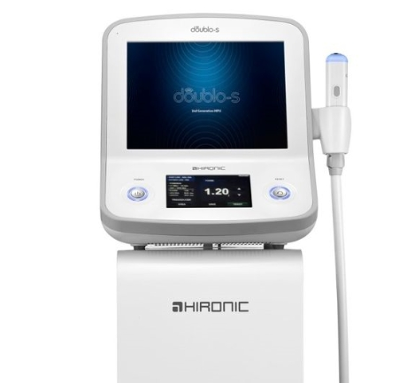
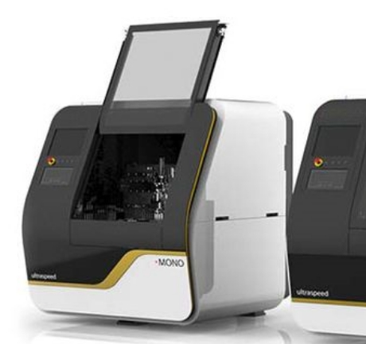
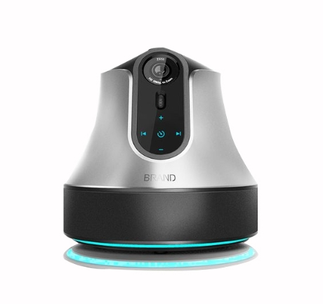
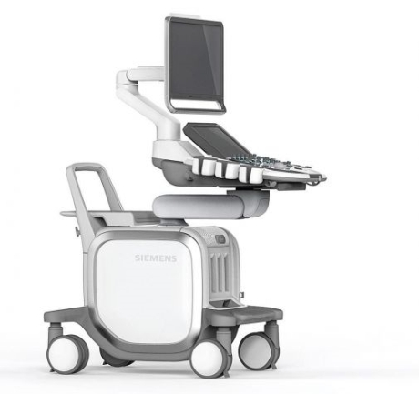
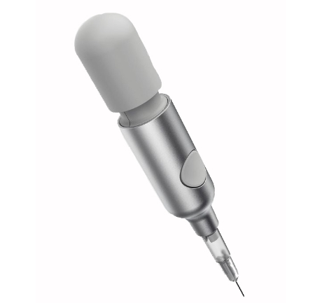
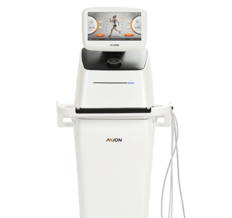

T R A I N I N G
메디컬 트레이닝 센터
Equipment
교정치료 장비소개

신장분사치료기
-78℃ 액화 CO2 가스를 환부에 저온 분사을 통해
피부신경에 고강도 반응을 유발시켜
통증의 완화 등에 사용되는 의료기기입니다.

전자기장치료기
심부 자극 치료효과로 수기치료가 가능합니다.
급 만성 요통, 경추통증, 좌골신경통, 퇴행성 관절염,
신경통증 등에 효과가 있습니다.

고주파치료기
고주파 전류를 인체에 통전시켜 생체에너지로
변환합니다. 이에너지는 세포기능 증진 및 순환을
빠르게하여 손상 조직의 치유를 가속화합니다.

체외충격파치료기
혈관의 생성을 유도하고 조직재생을 촉진합니다.
어깨, 팔꿈치, 무릎, 아킬레스건, 경추,
요추 등에 효과적입니다.

크라이오테라피
극저온 신경 자극치료로 자가치유능력을
극대화합니다. 자가치유능력을 극대화해
환부를 치료하게 됩니다.

고강도레이저치료기
고강도 파장인 레이저는 피부에서 심부 깊숙이
침투하여 세포 활성화를 유도하고, 혈액순환 개선을
통해 부종 및 염증 통증치료 효과가 있습니다.